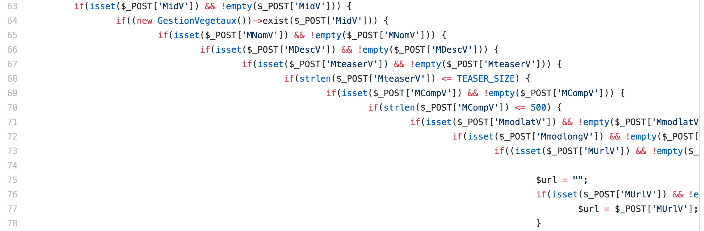
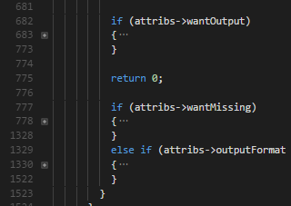
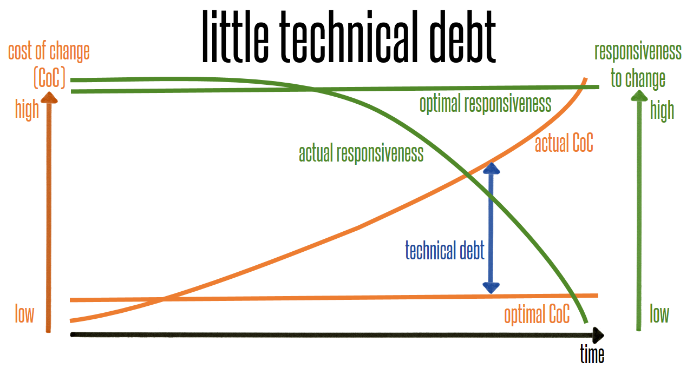

Incremental Development
(CT/CI Omitted for Brevity)
Write-only Code
Unsafe Code
Dodgy Tests
Poor Collaboration
Reduce Technical Debt
Knowledge Transfer
Transparency
Retain Knowledge when Employees Quit
Train Juniors & Newjoiners
Risk Management
Query Expenses of an Employee/a Team
def getExpenseData(request):
if isAuthenticated(request.user) \
&& targetExists(request.target) \
&& withinQuota(request.user) \
&& isAuthorized(request.user, request.target):
result = queryData(request.target)
return result.json()
else:
raise AccessDenied()
def getExpenseData(request):
if isAuthenticated(request.user):
if targetExists(request.target):
if withinQuota(request.user):
if isAuthorized(request.user, request.target):
result = queryData(request.target)
return result.json()
else:
logger.error("The user is not authorized to access the target!")
raise AccessDenied()
else:
logger.error("Invalid target!")
raise InvalidTarget()
else:
logger.error("Over quota for the user!")
raise OverQuota()
else:
logger.error("Invalid user!")
raise InvalidUser()
else branch for InvalidTarget & OverQuota
# BAD:
logger.error("The user is not authorized to access the target!")
# GOOD:
logger.error(
"The user %s is not authorized to access the target %s" % (
request.user, request.target))
def getExpenseData(request):
if not isAuthenticated(request.user):
logger.error("Invalid user: %s" % request.user)
raise InvalidUser()
if not targetExists(request.target):
logger.error("Invalid target: %s" % request.target)
raise InvalidTarget()
if not withinQuota(request.user):
logger.error("Over quota for the user: %s" % request.user)
raise OverQuota()
if not isAuthorized(request.user, request.target):
logger.error("The user %s is not authorized to access the target %s" % (request.user, request.target))
raise AccessDenied()
result = queryData(request.target)
return result.json()
Or how a developer missed dinner date*
def update_team_balance(teamId, balance):
...
def update_user_balance(userId, balance):
...
# By accident - will update a team whose id = userId
update_team_balance(userId, 1000000)
Note: It was a cliché ;-)
If it was written in C/C++
void update_team_balance(int teamId, double balance);
void update_user_balance(int userId, double balance);
Still not any safer!
Take 1. Let's pass typed instances
typedef struct {int id;} team_t;
typedef struct {int id;} user_t;
void update_team_balance(const team_t* ptrTeam, double balance);
void update_user_balance(const user_t* ptrUser, double balance);
void updateTeamBalance(const team_t& team, double balance);
void updateUserBalance(const user_t& user, double balance);
C/C++ version is better & safer now
Take 1. What about the Python version?
def update_team_balance(team, balance):
# Use team.ID
...
def update_user_balance(user, balance):
# Use user.ID
...
# Duck-typing is a double-edge sword
# By accident - will update a team whose ID = user.ID
update_team_balance(user, 1000000)
It's not quite safe in Python yet :-(
Take 2. Better & safer Python version
class User:
def userId(self): return self.ID
class Team:
def teamId(self): return self.ID
def update_team_balance(team, balance):
# Use team.teamId()
def update_user_balance(user, balance):
# Use user.userId()
update_team_balance(user, 1000000) # Won't work!
Take 2. One can use distinct properties too
class User:
def __init__(self, userId):
self.userId = userId
class Team:
def __init__(self, teamId):
self.teamId = teamId
# This function requires teamId, make sure User doesn't have it
update_team_balance(user, 1000000)
Take 2. How about Java, PHP, C/C++?
// Left as an exercise to the audience ;-)
Key Takeaways
Adapted to fit this screen from source
1: public static int binarySearch(int[] a, int key) {
2: int low = 0;
3: int high = a.length - 1;
4: while (low <= high) {
5: int mid = (low + high) / 2;
6: int midVal = a[mid];
7: if (midVal < key) low = mid + 1
8: else if (midVal > key) high = mid - 1;
9: else return mid; // key found
10: }
11: return -(low + 1); // key not found.
12: }
The issue is on the line 5
5: int mid = (low + high) / 2;
Integer overflow when: (low + high) > 231 - 1
Solutions
5: int mid = low + (high - low) / 2;
// The author also suggested a hacky way for C/C++
5: int mid = ((unsigned int)low + (unsigned int)high) >> 1;
// Verdict: Use unsigned int in API and use the 1st approach